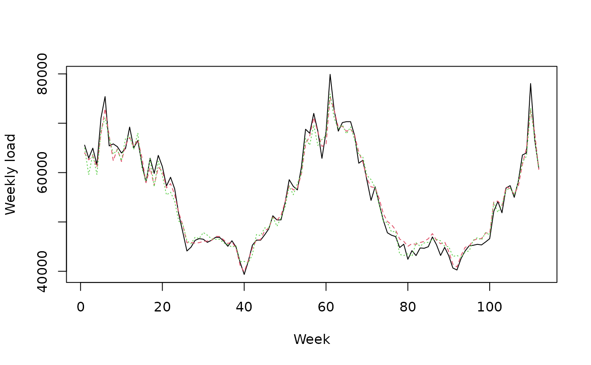

R/mixture.R, R/print-mixture.R, R/summary-mixture.R
mixture-opera.RdThe function mixture builds an
aggregation rule chosen by the user.
It can then be used to predict new observations Y sequentially.
If observations Y and expert advice experts are provided,
mixture is trained by predicting the observations in Y
sequentially with the help of the expert advice in experts.
At each time instance \(t=1,2,\dots,T\), the mixture forms a prediction of Y[t,] by assigning
a weight to each expert and by combining the expert advice.
A matrix with T rows and d columns. Each row Y[t,] contains a d-dimensional
observation to be predicted sequentially.
An array of dimension c(T,d,K), where T is the length of the data-set,
d the dimension of the observations, and K is the number of experts. It contains the expert
forecasts. Each vector experts[t,,k] corresponds to the d-dimensional prediction of Y[t,]
proposed by expert k at time \(t=1,\dots,T\).
In the case of real prediction (i.e., \(d = 1\)), experts is a matrix with T rows and K columns.
A character string specifying the aggregation rule to use. Currently available aggregation rules are:
Exponentially weighted average aggregation rules (Cesa-Bianchi and Lugosi 2006) . A positive learning rate eta can be chosen by the user. The bigger it is the faster the aggregation rule will learn from observations and experts performances. However, too high values lead to unstable weight vectors and thus unstable predictions. If it is not specified, the learning rate is calibrated online. A finite grid of potential learning rates to be optimized online can be specified with grid.eta.
Fixed-share aggregation rule (Cesa-Bianchi and Lugosi 2006)
. As for ewa, a learning rate eta
can be chosen by the user or calibrated online. The main difference with ewa aggregation
rule rely in the mixing rate alpha\(\in [0,1]\) which considers at
each instance a small probability alpha to have a rupture in the
sequence and that the best expert may change. Fixed-share aggregation rule
can thus compete with the best sequence of experts that can change a few
times (see oracle), while ewa can only
compete with the best fixed expert. The mixing rate alpha is either chosen by the user either calibrated online.
Finite grids of learning rates and mixing rates to be optimized can be specified with
parameters grid.eta and grid.alpha.
Online Ridge regression (Cesa-Bianchi and Lugosi 2006) . It minimizes at each instance a penalized criterion. It forms at each instance linear combination of the experts' forecasts and can assign negative weights that not necessarily sum to one. It is useful if the experts are biased or correlated. It cannot be used with specialized experts. A positive regularization coefficient lambda can either be chosen by the user or calibrated online. A finite grid of coefficient to be optimized can be specified with a parameter grid.lambda.
Aggregation rules with multiple learning rates that are theoretically calibrated (Gaillard et al. 2014) .
Bernstein online Aggregation (Wintenberger 2017) . The learning rates are automatically calibrated.
Online Gradient descent (Zinkevich 2003) . See also (Hazan 2019) . The optimization is performed with a time-varying learning rate. At time step \(t \geq 1\), the learning rate is chosen to be \(t^{-\alpha}\), where \(\alpha\) is provided by alpha in the parameters argument. The algorithm may or not perform a projection step into the simplex space (non-negative weights that sum to one) according to the value of the parameter 'simplex' provided by the user.
Follow The Regularized Leader (Shalev-Shwartz and Singer 2007)
.
Note that here, the linearized version of FTRL is implemented (see Chap. 5 of (Hazan 2019)
).
FTRL is the online counterpart of empirical risk minimization. It is a family of aggregation rules (including OGD) that uses at any time the empirical risk
minimizer so far with an additional regularization. The online optimization can be performed
on any bounded convex set that can be expressed with equality or inequality constraints. Note that this method is still under development and a beta version.
The user must provide (in the parameters's list):
'eta' The learning rate.
'fun_reg' The regularization function to be applied on the weigths. See auglag: fn.
'constr_eq' The equality constraints (e.g. sum(w) = 1). See auglag: heq.
'constr_ineq' The inequality constraints (e.g. w > 0). See auglag: hin.
'fun_reg_grad' (optional) The gradient of the regularization function. See auglag: gr.
'constr_eq_jac' (optional) The Jacobian of the equality constraints. See auglag: heq.jac
'constr_ineq_jac' (optional) The Jacobian of the inequality constraints. See auglag: hin.jac
or set default to TRUE. In the latter, FTRL is performed with Kullback regularization (fun_reg(x) = sum(x log (x/w0))
on the simplex (constr_eq(w) = sum(w) - 1 and constr_ineq(w) = w).
Parameters w0 (weight initialization), and max_iter can also be provided.
character, list, or function ("square").
Name of the loss to be applied ('square', 'absolute', 'percentage', or 'pinball');
List with field name equal to the loss name. If using pinball loss, field tau equal to the required quantile in [0,1];
A custom loss as a function of two parameters (prediction, observation). For example, $f(x,y) = abs(x-y)/y$ for the Mean absolute percentage error or $f(x,y) = (x-y)^2$ for the squared loss.
boolean, function (TRUE).
If TRUE, the aggregation rule will not be directly applied to the loss function at hand, but to a gradient version of it. The aggregation rule is then similar to gradient descent aggregation rule.
Can be provided if loss.type is a function. It should then be a sub-derivative of the loss in its first component (i.e., in the prediction). For instance, $g(x) = (x-y)$ for the squared loss.
A probability vector of length K containing the prior weights of the experts (not possible for 'MLpol'). The weights must be non-negative and sum to 1.
A matrix specifying the
activation coefficients of the experts. Its entries lie in [0,1].
Possible if some experts are specialists and do not always form and suggest
prediction. If the expert number k at instance t does not
form any prediction of observation Y_t, we can put
awake[t,k]=0 so that the mixture does not consider expert k in
the mixture to predict Y_t.
A list that contains optional parameters for the aggregation rule. If no parameters are provided, the aggregation rule is fully calibrated online. Possible parameters are:
A positive number defining the learning rate. Possible if model is either 'EWA' or 'FS'
A vector of positive numbers defining potential learning rates for 'EWA' of 'FS'. The learning rate is then calibrated by sequentially optimizing the parameter in the grid. The grid may be extended online if needed by the aggregation rule.
A positive number defining the exponential step of extension of grid.eta when it is needed. The default value is 2.
A number in [0,1]. If the model is 'FS', it defines the mixing rate. If the model is 'OGD', it defines the order of the learning rate: \(\eta_t = t^{-\alpha}\).
A vector of numbers in [0,1] defining potential mixing rates for 'FS'
to be optimized online. The grid is fixed over time. The default value is [0.0001,0.001,0.01,0.1].
A positive number defining the smoothing parameter of 'Ridge' aggregation rule.
Similar to grid.eta for the parameter lambda.
A boolean that specifies if 'OGD' does a project on the simplex. In other words, if TRUE (default) the online gradient descent will be under the constraint that the weights sum to 1 and are non-negative. If FALSE, 'OGD' performs an online gradient descent on K dimensional real space. without any projection step.
A boolean (default is FALSE). If TRUE the coefficients and the weights returned (and used to form the predictions) are averaged over the past. It leads to more stability on the time evolution of the weights but needs more regularity assumption on the underlying process generating the data (i.i.d. for instance).
boolean. Whether or not to display progress bars.
Additional parameters
An object of class mixture
An object of class mixture
An object of class mixture that can be used to perform new predictions.
It contains the parameters model, loss.type, loss.gradient,
experts, Y, awake, and the fields
A vector of coefficients assigned to each expert to perform the next prediction.
A matrix of dimension c(T,K), with
T the number of instances to be predicted and K the number of
experts. Each row contains the convex combination to form the predictions
A matrix with T rows and d columns that contains the
predictions outputted by the aggregation rule.
The average loss (as stated by parameter loss.type) suffered
by the aggregation rule.
The learning parameters chosen by the aggregation rule or by the user.
A list that contains useful temporary information of the aggregation rule to be updated and to perform predictions.
Cesa-Bianchi N, Lugosi G (2006).
Prediction, learning, and games.
Cambridge university press.
Gaillard P, Stoltz G, van Erven T (2014).
“A Second-order Bound with Excess Losses.”
In Proceedings of COLT'14, volume 35, 176--196.
Hazan E (2019).
“Introduction to online convex optimization.”
arXiv preprint arXiv:1909.05207.
Shalev-Shwartz S, Singer Y (2007).
“A primal-dual perspective of online learning algorithms.”
Machine Learning, 69(2), 115--142.
Wintenberger O (2017).
“Optimal learning with Bernstein online aggregation.”
Machine Learning, 106(1), 119--141.
Zinkevich M (2003).
“Online convex programming and generalized infinitesimal gradient ascent.”
In Proceedings of the 20th international conference on machine learning (icml-03), 928--936.
See opera-package and opera-vignette for a brief example about how to use the package.
library('opera') # load the package
set.seed(1)
# Example: find the best one week ahead forecasting strategy (weekly data)
# packages
library(mgcv)
#> Loading required package: nlme
#> This is mgcv 1.8-40. For overview type 'help("mgcv-package")'.
# import data
data(electric_load)
idx_data_test <- 620:nrow(electric_load)
data_train <- electric_load[-idx_data_test, ]
data_test <- electric_load[idx_data_test, ]
# Build the expert forecasts
# ##########################
# 1) A generalized additive model
gam.fit <- gam(Load ~ s(IPI) + s(Temp) + s(Time, k=3) +
s(Load1) + as.factor(NumWeek), data = data_train)
gam.forecast <- predict(gam.fit, newdata = data_test)
# 2) An online autoregressive model on the residuals of a medium term model
# Medium term model to remove trend and seasonality (using generalized additive model)
detrend.fit <- gam(Load ~ s(Time,k=3) + s(NumWeek) + s(Temp) + s(IPI), data = data_train)
electric_load$Trend <- c(predict(detrend.fit), predict(detrend.fit,newdata = data_test))
electric_load$Load.detrend <- electric_load$Load - electric_load$Trend
# Residual analysis
ar.forecast <- numeric(length(idx_data_test))
for (i in seq(idx_data_test)) {
ar.fit <- ar(electric_load$Load.detrend[1:(idx_data_test[i] - 1)])
ar.forecast[i] <- as.numeric(predict(ar.fit)$pred) + electric_load$Trend[idx_data_test[i]]
}
# Aggregation of experts
###########################
X <- cbind(gam.forecast, ar.forecast)
colnames(X) <- c('gam', 'ar')
Y <- data_test$Load
matplot(cbind(Y, X), type = 'l', col = 1:6, ylab = 'Weekly load', xlab = 'Week')

# How good are the expert? Look at the oracles
oracle.convex <- oracle(Y = Y, experts = X, loss.type = 'square', model = 'convex')
if(interactive()){
plot(oracle.convex)
}
oracle.convex
#> Call:
#> oracle.default(Y = Y, experts = X, model = "convex", loss.type = "square")
#>
#> Coefficients:
#> gam ar
#> 0.751 0.249
#>
#> rmse mape
#> Best expert oracle: 1480 0.0202
#> Uniform combination: 1480 0.0206
#> Best convex oracle: 1450 0.0200
# Is a single expert the best over time ? Are there breaks ?
oracle.shift <- oracle(Y = Y, experts = X, loss.type = 'percentage', model = 'shifting')
if(interactive()){
plot(oracle.shift)
}
oracle.shift
#> Call:
#> oracle.default(Y = Y, experts = X, model = "shifting", loss.type = "percentage")
#>
#> 0 shifts 28 shifts 55 shifts 83 shifts 111 shifts
#> mape: 0.0202 0.0159 0.0154 0.0154 0.0154
# Online aggregation of the experts with BOA
#############################################
# Initialize the aggregation rule
m0.BOA <- mixture(model = 'BOA', loss.type = 'square')
# Perform online prediction using BOA There are 3 equivalent possibilities 1)
# start with an empty model and update the model sequentially
m1.BOA <- m0.BOA
for (i in 1:length(Y)) {
m1.BOA <- predict(m1.BOA, newexperts = X[i, ], newY = Y[i], quiet = TRUE)
}
# 2) perform online prediction directly from the empty model
m2.BOA <- predict(m0.BOA, newexpert = X, newY = Y, online = TRUE, quiet = TRUE)
# 3) perform the online aggregation directly
m3.BOA <- mixture(Y = Y, experts = X, model = 'BOA', loss.type = 'square', quiet = TRUE)
# These predictions are equivalent:
identical(m1.BOA, m2.BOA) # TRUE
#> [1] TRUE
identical(m1.BOA, m3.BOA) # TRUE
#> [1] TRUE
# Display the results
summary(m3.BOA)
#> Aggregation rule: BOA
#> Loss function: squareloss
#> Gradient trick: TRUE
#> Coefficients:
#> gam ar
#> 0.795 0.205
#>
#> Number of experts: 2
#> Number of observations: 112
#> Dimension of the data: 1
#>
#> rmse mape
#> BOA 1480 0.0203
#> Uniform 1480 0.0206
if(interactive()){
plot(m1.BOA)
}
# Using d-dimensional time-series
##################################
# Consider the above exemple of electricity consumption
# to be predicted every four weeks
YBlock <- seriesToBlock(X = Y, d = 4)
XBlock <- seriesToBlock(X = X, d = 4)
# The four-week-by-four-week predictions can then be obtained
# by directly using the `mixture` function as we did earlier.
MLpolBlock <- mixture(Y = YBlock, experts = XBlock, model = "MLpol", loss.type = "square",
quiet = TRUE)
# The predictions can finally be transformed back to a
# regular one dimensional time-series by using the function `blockToSeries`.
prediction <- blockToSeries(MLpolBlock$prediction)
#### Using the `online = FALSE` option
# Equivalent solution is to use the `online = FALSE` option in the predict function.
# The latter ensures that the model coefficients are not
# updated between the next four weeks to forecast.
MLpolBlock <- mixture(model = "BOA", loss.type = "square")
d = 4
n <- length(Y)/d
for (i in 0:(n-1)) {
idx <- 4*i + 1:4 # next four weeks to be predicted
MLpolBlock <- predict(MLpolBlock, newexperts = X[idx, ], newY = Y[idx], online = FALSE,
quiet = TRUE)
}
print(head(MLpolBlock$weights))
#> [,1] [,2]
#> [1,] 0.5000000 0.5000000
#> [2,] 0.5000000 0.5000000
#> [3,] 0.5000000 0.5000000
#> [4,] 0.5000000 0.5000000
#> [5,] 0.5243539 0.4756461
#> [6,] 0.5243539 0.4756461